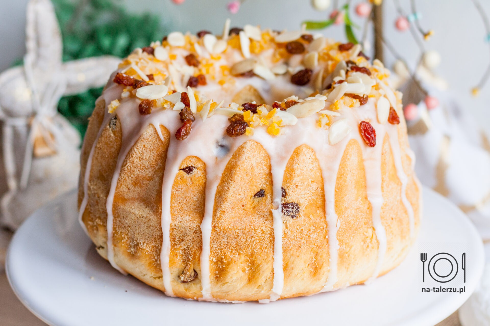

Babka wielkanocna
- 4 szklanki mąki pszennej
- 1 szklanka mleka
- 1 kostka drożdży
- 1/2 szklanki cukru
- 1/2 szklanki rozpuszczonego masła
- 4 jajka
- 1/2 łyżeczki soli
- 1 łyżeczka ekstraktu waniliowego
- 1/2 szklanki rodzynków
- skórka starta z jednej pomarańczy
Rozpuścić drożdże w ciepłym mleku z łyżeczką cukru. Wymieszać mąkę, cukier, sól, wanilię i skórkę z pomarańczy. Dodać jajka i rozpuszczone masło. Dodać drożdże i wyrabiać ciasto przez 10 minut. Dodać rodzynki i dokładnie wymieszać. Odstawić do wyrośnięcia na 1 godzinę. Wylać do natłuszczonej formy i piec w piekarniku nagrzanym do 180 stopni przez 45-50 minut.
Jajka faszerowane
- 12 jajek
- 1/2 szklanki majonezu
- 1/4 szklanki musztardy
- 1/4 szklanki posiekanej cebuli
- 1 łyżka octu jabłkowego
- 1/2 łyżeczki soli
- 1/4 łyżeczki pieprzu
- 1/4 łyżeczki papryki
Ugotować jajka na twardo. Ostudzić i obrać ze skorupek. Przekroić na pół i wyjąć żółtka. Wymieszać żółtka, majonez, musztardę, cebulę, ocet, sól, pieprz i paprykę. Napełnić białka mieszanką. Przechowywać w lodówce do podania.